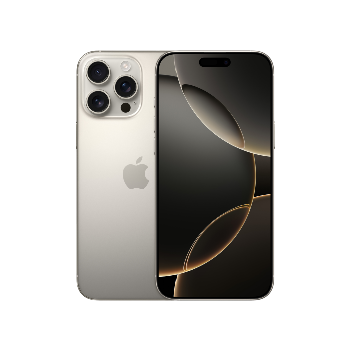

1. Processor – Apple M3 Max 40 GPU cores
2. Storage – 1TB SSD
3. RAM – 36GB Unified Memory
4. Display – 16.2" Liquid Retina XDR, 120Hz (ProMotion), 3456×2234
70.000 грн


iPhone 16 Pro Max — флагманський смартфон Apple з великим 6.9-дюймовим Super Retina XDR OLED дисплеєм з частотою оновлення до 120 Гц. Оснащений потужним процесором Apple A18 Pro на 3-нм техпроцесі, що забезпечує високу продуктивність і енергоефективність. Смартфон має передову систему камер: основна 48 МП з підтримкою оптичної стабілізації, ультраширококутна 48 МП і телеоб’єктив з 5× оптичним зумом, що дозволяє робити якісні фото та відео в будь-яких умовах. Підтримує зйомку у 4K з частотою до 120 кадрів за секунду. Корпус виконаний з міцного титану з водо- та пилонепроникністю за стандартом IP68. Акумулятор забезпечує тривалий час роботи, підтримується швидка зарядка через USB-C. iPhone 16 Pro Max оснащений новими функціями, як-от Camera Control Button, Dynamic Island та Wi-Fi 7, що робить його ідеальним вибором для користувачів, які цінують потужність, якість зйомки і сучасні технології.